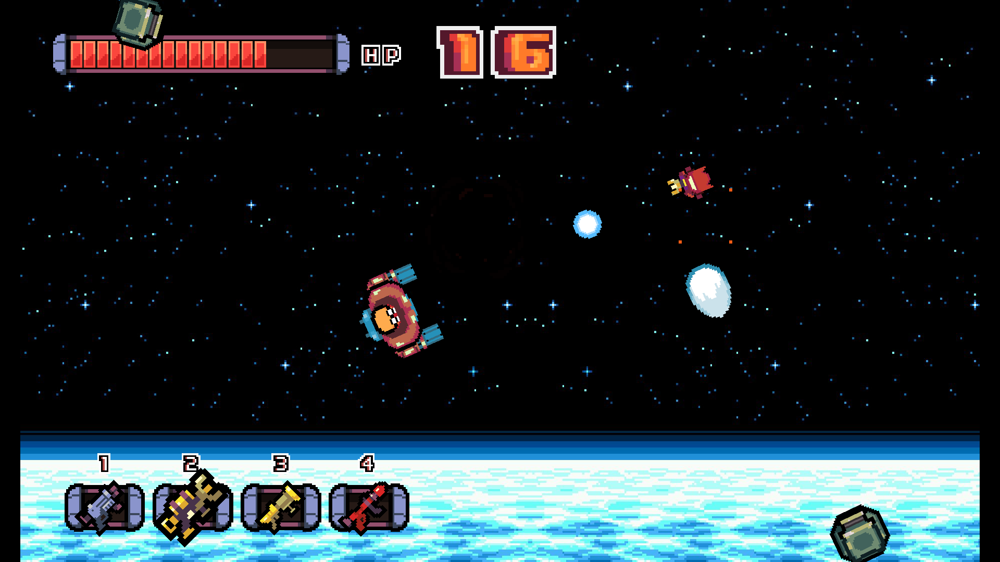
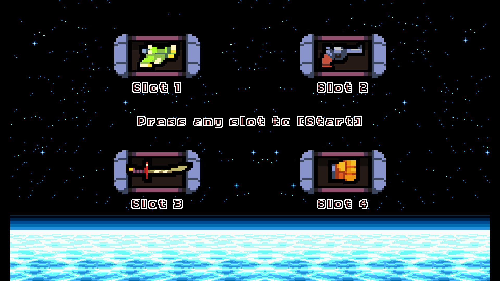
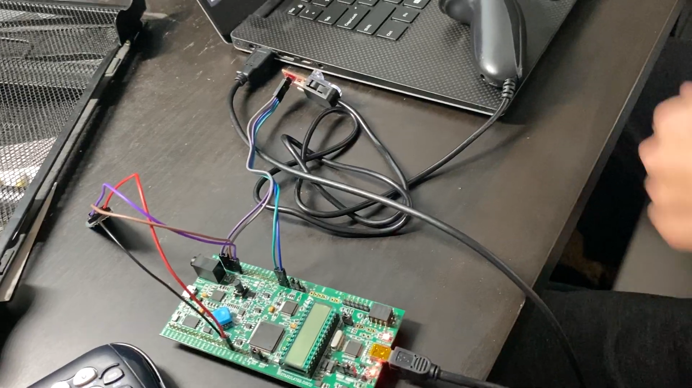
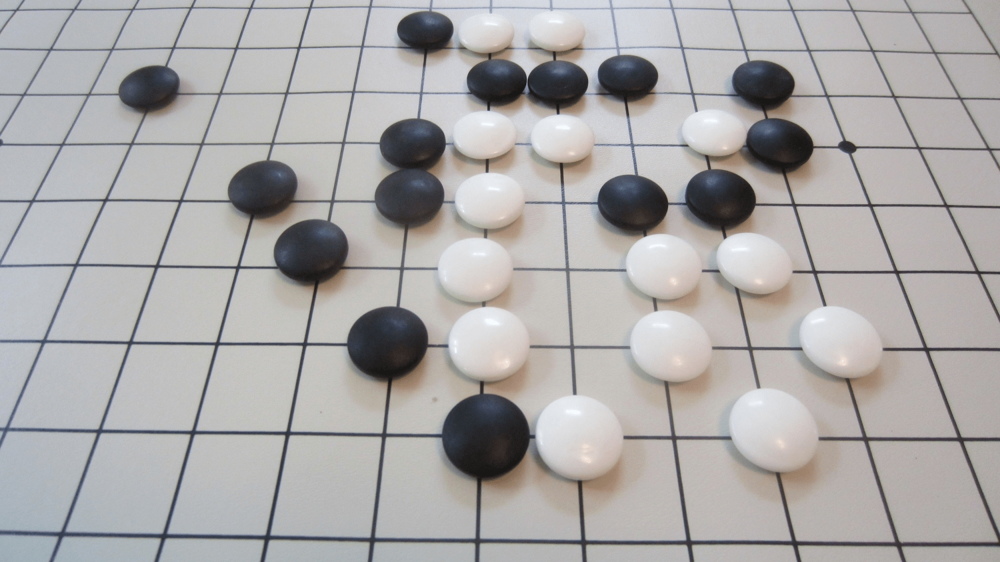
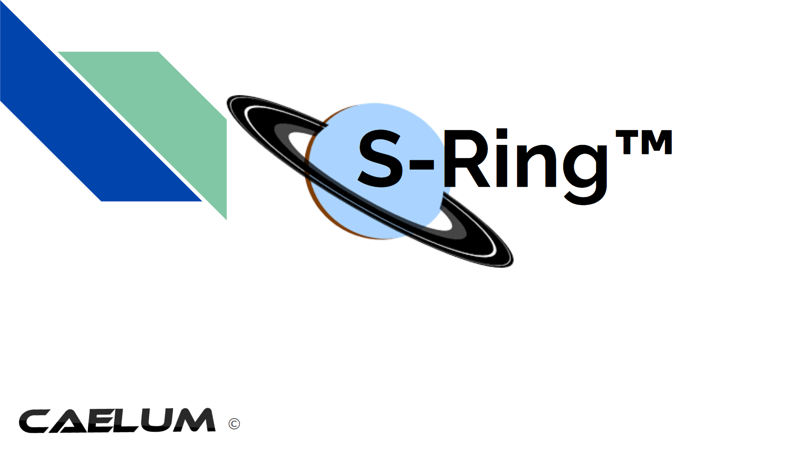
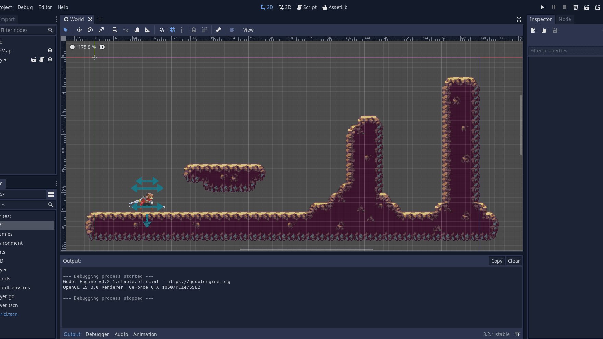

Projects
Astro
Play it Here!
Astro is a top-down space shooter developed in the Godot game engine. All assets were provided by generous online users with the permission to use in non-commercial projects. This project was finished independently over the summer of 2020. The in-built scripting language, GDScript, shares noticeable similarities with the popular Python language (i.e. using colons instead of brackets, no required semicolons, etc.). It is built around a node-based system in which each component of the game (i.e. player,enemies, world) are represented as root nodes with children nodes, reminiscent of C++ and the usage of pointers.
The game begins with a menu screen with an interactive UI. Starting the game will bring the player to a custom dialogue scene in which the player is told about their duty to fight off an alien invasion. For 5 thirty-second rounds, the player is tasked with surviving. The main feature of Astro is the usage of a 4-weapon loadout, from a 12-weapon arsenal, which changes every round. Using google sheets, I tried my best to balance the different advantages of each gun - bullet speed, gun delay, and damage - by comparing the average weight of each attribute. Unfortunately, once the game was released, I received feedback about certain weapons being overpowered and some being unusable. It's a project that really tested my debugging skills and is a project I still continue to refine today.
Hoverquad

Project Document
The Hoverquad is a drone-like automotive that functions using four brushless motors. Unlike a regular drone, it's main function is to "hover" by continously correcting itself until equilibrium, using the calculations of yaw, pitch, and roll. Our method of control was to interface with an Adafruit Feather M0 Bluefruit LE in order to make inputs via bluetooth. Communicating with the Feather using pulse-width modulation allowed the motors to understand how much throttle would be needed. In conjunction, we gathered data from the MPU-6050's accelerometer and gyroscope functions to ensure that the device wouldn't exceed a 5-degree angle when turning.
Pacman
Project Website
The main hardware components of this project were an STM32L4 discovery board, a Wii nunchuk, a Wii Nunchucky, and an HC-05 Bluetooth Module. The general concept was to emulate keypresses on the keyboard by using a nunchuk. These keypresses were then used to play a custom Pacman-type game that was coded in python. The process went as follows:
- read inputs from the Wii nunchuk by interfacing with the STM32L4 via I2C (serial protocol)
- translate those inputs into human-logic (i.e. "left", "right", "up", "down") by interfacing with Termite, an RS232 terminal via UART, by printing words to a serial com port.
- use a python script in order to read from the serial com port and convert them into keypress commands
- and finally, create and play the custom pacman game with the nunchuk!
Gomoku AI
Disclaimer: Unfortunately as it was a class assignment, I cannot post the source code.
The concept was simply to create an AI to beat a baseline AI program in a game of Gomoku. Conditions of implementing a successful AI were on the requirement that it would win at least 7/10 times against the baseline. The main behavior of the AI was based on the mini-maxing algorithm. In this algorithm, the AI gathers information about all the possible states of the board after "x" amount of turns (i.e. 2 turns would mean the enemy made one move and the player made one move)
Using a custom heuristic function, the AI would be able to then determine what board was the most optimized for each player (i.e. a board with four-in-a-row is more valuable than one with only three-in-a-row). From the perspective of the player A.I., you would want to "maximize" the board and conversely, from the perspective of the enemy AI, they would want to "minimize" the board.With this in mind, the AI would then backtrack from each predicted future and min/max based on whose turn it was to eventually reach the original board with a mathematical evaluation of each path. It is important to note that the algorithm assumes that the enemy player is playing optimally.
This project was very eye-opening to the world of artifical intelligence. While a very small sample size, I felt that it gave me a better understanding of both the complications of A.I. and the infinite potential of A.I. Larger-scale concepts such as the self-driving car brings about questions regarding the risk-and-reward model. While conceptually the idea is sound, it's also obvious that there are an endless amount of situations that an automated vehicle could face. To slightly go off topic, I recently took a class by the name of ENGR101 in which we discussed the "programmable ethics" of a car. For example, when a car is unable to stop and there are people both directly in front and to the sides of the car, what decision will the engineers choose? It becomes a matter of programming the decision to sacrifice one over the other; a decision that can change the perception on ethics and morality.
S-Ring
Product Research Paper
The S-Ring was a product conceptualized in 2018 for the purpose of simulating a mock product proposal to a company. Our collective was "Caelum" and we found a deep issue within the usage of outer space as a garbage disposal. In all sizes, space debris can prove to be deadly for active space vehicles; even small specks can cause major damage in the structure of a ship if the specks attain an extremely high velocity. However, our group felt that it was more urgent to tackle the larger abandoned satellites that were left orbiting earth.
The S-Ring was a potential solution. The design of the vehicle would be oval-ish with an open middle; it was made with the intent of completely surrounding satellites and constricting until the target was clamped in firmly. The product design relied on research for these main components: a power source, a way to track debris location, thrusters, hydraulics, sensors, and a launching mechanism. In the research paper, you will find information on chosen products, other considered options, and scientific reasoning for each decision.
Lone (in progress!)
Play it Here!
July 29, 2020. Lone is a game that I am currently working on. It is a 2D-platformer that emphasises player movement. In addition to the conventional "idle", "run", and "jump" states, I have already implemented sliding, wall-climbing, wall-jumping, double-jumping, and an attack combo system (with animations for all). I hope to finish the game logic and the world construction by two or three weeks and finish the user interface and sound mapping by the end of next month (August).